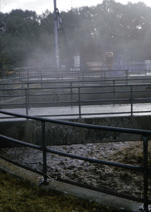

Beim Umgang mit wassergefährdenden Stoffen sind die einschlägigen Rechtsvorschriften einzuhalten.
Der Umgang mit wassergefährdenden Stoffen ist der Baustellenleitung und dem Koordinator zu melden.
Flüssige Stoffe dürfen nicht in das Erdreich abgeleitet werden. Abwässer aus Reinigungsvorgängen sind aufzufangen und vom Auftragnehmer zu entsorgen. Geschieht dies nicht, kann der Auftraggeber einen Bodenaustausch zu Lasten des Verursachers vornehmen lassen.